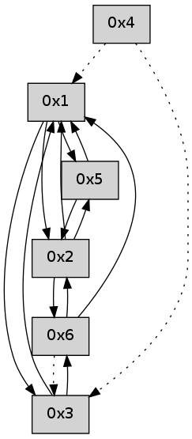

>> << IDX [start] -100 -25 -5 +0 +5 +25 +100 [475.034023046]
 Previous packets
----------------------------------------------------------------------
470.112942 beacon01(adaf) #0 coord=01,02,05,03,04,06 cycle=432.0ms assoc
-- color-indic=0 64 f5 8a
470.122902 beacon02(adaf) #0 coord=01,02,05,03,04,06 cycle=432.0ms assoc 64 a4 75
470.132902 beacon05(adaf) #0 coord=01,02,05,03,04,06 cycle=432.0ms assoc 64 02 5f
470.142904 beacon03(adaf) #0 coord=01,02,05,03,04,06 cycle=432.0ms assoc 64 9e 7b
470.152904 beacon04(adaf) #0 coord=01,02,05,03,04,06 cycle=432.0ms assoc 64 38 51
470.162904 beacon06(adaf) #0 coord=01,02,05,03,04,06 cycle=432.0ms assoc 64 4c 4d
470.174573 [Hello(3): seq=268 asym=2,6,1 sysInfo= stat=2:0,0,0,0/6:0,0,0,0/1:6,0,0,0]
----------------------------------------------------------------------
470.605050 beacon01(adaf) #0 coord=01,02,05,03,04,06 cycle=432.0ms assoc
-- color-indic=0 64 ab eb
470.615011 beacon02(adaf) #0 coord=01,02,05,03,04,06 cycle=432.0ms assoc 64 fa 14
470.625012 beacon05(adaf) #0 coord=01,02,05,03,04,06 cycle=432.0ms assoc 64 5c 3e
470.635011 beacon03(adaf) #0 coord=01,02,05,03,04,06 cycle=432.0ms assoc 64 c0 1a
470.645012 beacon04(adaf) #0 coord=01,02,05,03,04,06 cycle=432.0ms assoc 64 66 30
470.655013 beacon06(adaf) #0 coord=01,02,05,03,04,06 cycle=432.0ms assoc 64 12 2c
470.666680 [Hello(4): seq=269 asym=3,1 sysInfo= stat=3:0,0,0,0/1:6,0,0,0]
470.668988 [Hello(1): seq=168 sym=5,2,3 sysInfo= stat=5:5,0,0,0/2:2,0,0,0/3:0,0,0,0]
----------------------------------------------------------------------
471.097158 beacon01(adaf) #0 coord=01,02,05,03,04,06 cycle=432.0ms assoc
-- color-indic=0 64 6f 84
471.107118 beacon02(adaf) #0 coord=01,02,05,03,04,06 cycle=432.0ms assoc 64 3e 7b
471.117121 beacon05(adaf) #0 coord=01,02,05,03,04,06 cycle=432.0ms assoc 64 98 51
471.127119 beacon03(adaf) #0 coord=01,02,05,03,04,06 cycle=432.0ms assoc 64 04 75
471.137120 beacon04(adaf) #0 coord=01,02,05,03,04,06 cycle=432.0ms assoc 64 a2 5f
471.147120 beacon06(adaf) #0 coord=01,02,05,03,04,06 cycle=432.0ms assoc 64 d6 43
471.158765 [Hello(3): seq=269 sym=6,1 sysInfo= stat=6:1,0,0,0/1:7,0,0,0]
----------------------------------------------------------------------
471.589265 beacon01(adaf) #0 coord=01,02,05,03,04,06 cycle=432.0ms assoc
-- color-indic=0 64 23 34
471.599226 beacon02(adaf) #0 coord=01,02,05,03,04,06 cycle=432.0ms assoc 64 72 cb
471.609226 beacon05(adaf) #0 coord=01,02,05,03,04,06 cycle=432.0ms assoc 64 d4 e1
471.619227 beacon03(adaf) #0 coord=01,02,05,03,04,06 cycle=432.0ms assoc 64 48 c5
471.629227 beacon04(adaf) #0 coord=01,02,05,03,04,06 cycle=432.0ms assoc 64 ee ef
471.639228 beacon06(adaf) #0 coord=01,02,05,03,04,06 cycle=432.0ms assoc 64 9a f3
471.650872 [Hello(4): seq=270 asym=3,1 sysInfo= stat=3:1,0,0,0/1:7,0,0,0]
471.656877 [Hello(1): seq=169 sym=5,2,3 sysInfo= stat=5:5,0,0,0/2:2,0,0,0/3:1,0,0,0]
----------------------------------------------------------------------
472.081373 beacon01(adaf) #0 coord=01,02,05,03,04,06 cycle=432.0ms assoc
-- color-indic=0 64 e7 5b
472.091334 beacon02(adaf) #0 coord=01,02,05,03,04,06 cycle=432.0ms assoc 64 b6 a4
472.101334 beacon05(adaf) #0 coord=01,02,05,03,04,06 cycle=432.0ms assoc 64 10 8e
472.111334 beacon03(adaf) #0 coord=01,02,05,03,04,06 cycle=432.0ms assoc 64 8c aa
472.121334 beacon04(adaf) #0 coord=01,02,05,03,04,06 cycle=432.0ms assoc 64 2a 80
472.131335 beacon06(adaf) #0 coord=01,02,05,03,04,06 cycle=432.0ms assoc 64 5e 9c
472.142973 [Hello(3): seq=270 sym=6,1 sysInfo= stat=6:2,0,0,0/1:8,0,0,0]
----------------------------------------------------------------------
472.573480 beacon01(adaf) #0 coord=01,02,05,03,04,06 cycle=432.0ms assoc
-- color-indic=0 64 aa 5c
472.583440 beacon02(adaf) #0 coord=01,02,05,03,04,06 cycle=432.0ms assoc 64 fb a3
472.593441 beacon05(adaf) #0 coord=01,02,05,03,04,06 cycle=432.0ms assoc 64 5d 89
472.603442 beacon03(adaf) #0 coord=01,02,05,03,04,06 cycle=432.0ms assoc 64 c1 ad
472.613442 beacon04(adaf) #0 coord=01,02,05,03,04,06 cycle=432.0ms assoc 64 67 87
472.623444 beacon06(adaf) #0 coord=01,02,05,03,04,06 cycle=432.0ms assoc 64 13 9b
472.634540 [Hello(1): seq=170 sym=5,2,3 sysInfo= stat=5:5,0,0,0/2:2,0,0,0/3:2,0,0,0]
472.638748 [Hello(4): seq=271 asym=3,1 sysInfo= stat=3:2,0,0,0/1:8,0,0,0]
----------------------------------------------------------------------
473.065590 beacon01(adaf) #0 coord=01,02,05,03,04,06 cycle=432.0ms assoc
-- color-indic=0 64 6e 33
473.075550 beacon02(adaf) #0 coord=01,02,05,03,04,06 cycle=432.0ms assoc 64 3f cc
473.085551 beacon05(adaf) #0 coord=01,02,05,03,04,06 cycle=432.0ms assoc 64 99 e6
473.095552 beacon03(adaf) #0 coord=01,02,05,03,04,06 cycle=432.0ms assoc 64 05 c2
473.105551 beacon04(adaf) #0 coord=01,02,05,03,04,06 cycle=432.0ms assoc 64 a3 e8
473.115552 beacon06(adaf) #0 coord=01,02,05,03,04,06 cycle=432.0ms assoc 64 d7 f4
473.127214 [Hello(3): seq=271 sym=6,1 sysInfo= stat=6:3,0,0,0/1:9,0,0,0]
----------------------------------------------------------------------
473.557698 beacon01(adaf) #0 coord=01,02,05,03,04,06 cycle=432.0ms assoc
-- color-indic=0 64 22 83
473.567659 beacon02(adaf) #0 coord=01,02,05,03,04,06 cycle=432.0ms assoc 64 73 7c
473.577660 beacon05(adaf) #0 coord=01,02,05,03,04,06 cycle=432.0ms assoc 64 d5 56
473.587659 beacon03(adaf) #0 coord=01,02,05,03,04,06 cycle=432.0ms assoc 64 49 72
473.597660 beacon04(adaf) #0 coord=01,02,05,03,04,06 cycle=432.0ms assoc 64 ef 58
473.607660 beacon06(adaf) #0 coord=01,02,05,03,04,06 cycle=432.0ms assoc 64 9b 44
473.618758 [Hello(1): seq=171 sym=5,2,3 sysInfo= stat=5:5,0,0,0/2:2,0,0,0/3:3,0,0,0]
473.622985 [Hello(4): seq=272 asym=3,1 sysInfo= stat=3:3,0,0,0/1:8,0,0,0]
----------------------------------------------------------------------
474.049808 beacon01(adaf) #0 coord=01,02,05,03,04,06 cycle=432.0ms assoc
-- color-indic=0 64 e6 ec
474.059769 beacon02(adaf) #0 coord=01,02,05,03,04,06 cycle=432.0ms assoc 64 b7 13
474.069769 beacon05(adaf) #0 coord=01,02,05,03,04,06 cycle=432.0ms assoc 64 11 39
474.079769 beacon03(adaf) #0 coord=01,02,05,03,04,06 cycle=432.0ms assoc 64 8d 1d
474.089769 beacon04(adaf) #0 coord=01,02,05,03,04,06 cycle=432.0ms assoc 64 2b 37
474.099771 beacon06(adaf) #0 coord=01,02,05,03,04,06 cycle=432.0ms assoc 64 5f 2b
474.111431 [Hello(3): seq=272 sym=6,1 sysInfo= stat=6:4,0,0,0/1:10,0,0,0]
----------------------------------------------------------------------
474.541915 beacon01(adaf) #0 coord=01,02,05,03,04,06 cycle=432.0ms assoc
-- color-indic=0 64 c3 d1
474.551879 beacon02(adaf) #0 coord=01,02,05,03,04,06 cycle=432.0ms assoc 64 92 2e
474.561876 beacon05(adaf) #0 coord=01,02,05,03,04,06 cycle=432.0ms assoc 64 34 04
474.571877 beacon03(adaf) #0 coord=01,02,05,03,04,06 cycle=432.0ms assoc 64 a8 20
474.581877 beacon04(adaf) #0 coord=01,02,05,03,04,06 cycle=432.0ms assoc 64 0e 0a
474.591878 beacon06(adaf) #0 coord=01,02,05,03,04,06 cycle=432.0ms assoc 64 7a 16
474.602998 [Hello(1): seq=172 sym=5,2,3 sysInfo= stat=5:5,0,0,0/2:2,0,0,0/3:4,0,0,0]
474.607186 [Hello(4): seq=273 asym=3,1 sysInfo= stat=3:4,0,0,0/1:8,0,0,0]